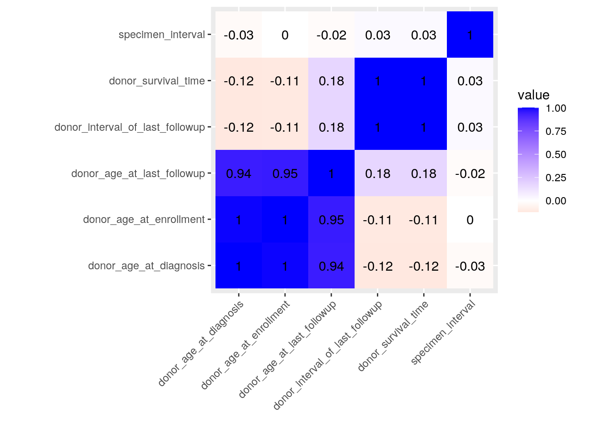
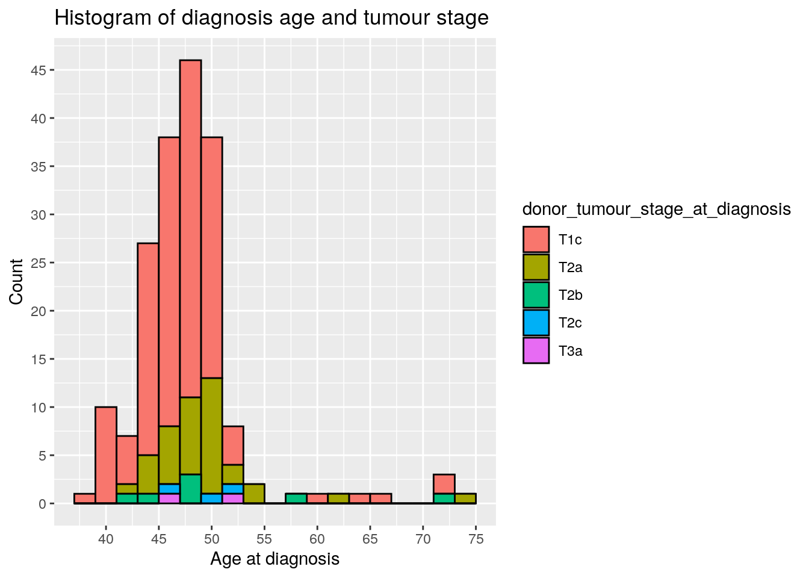
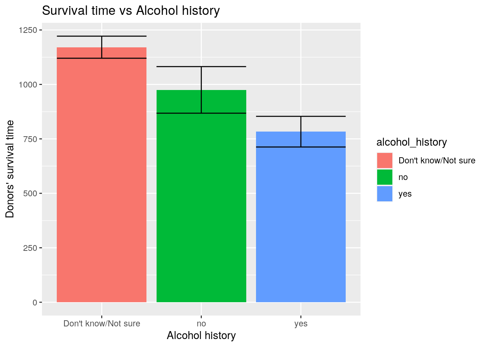
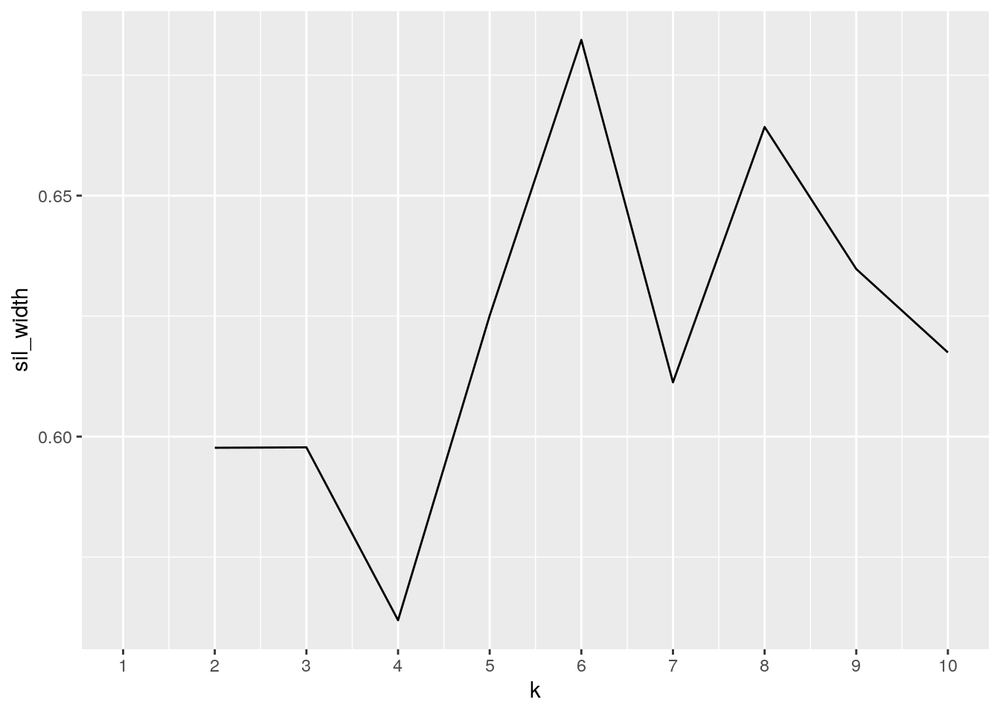
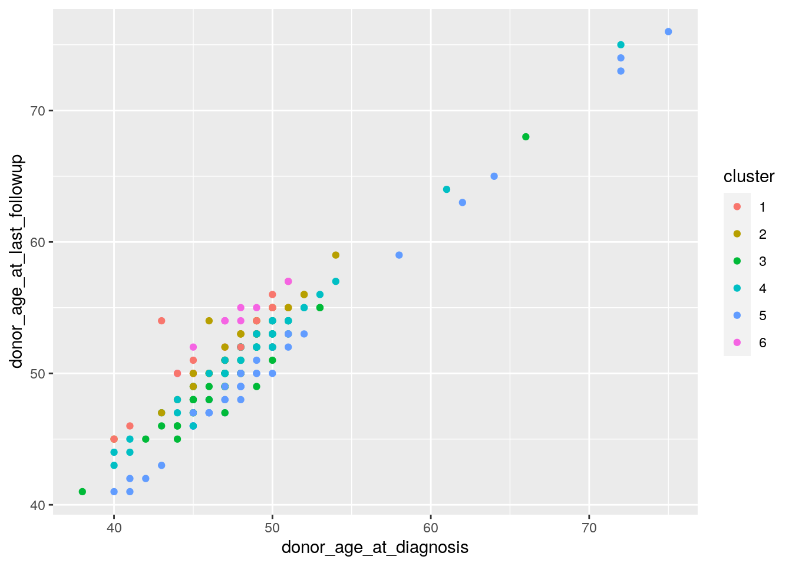
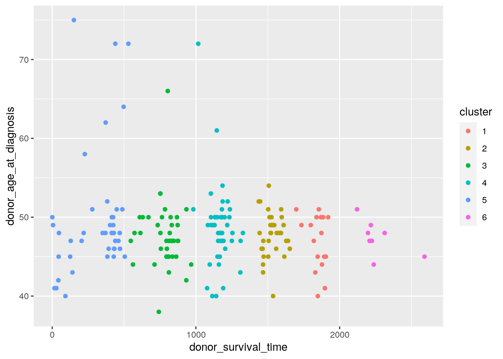
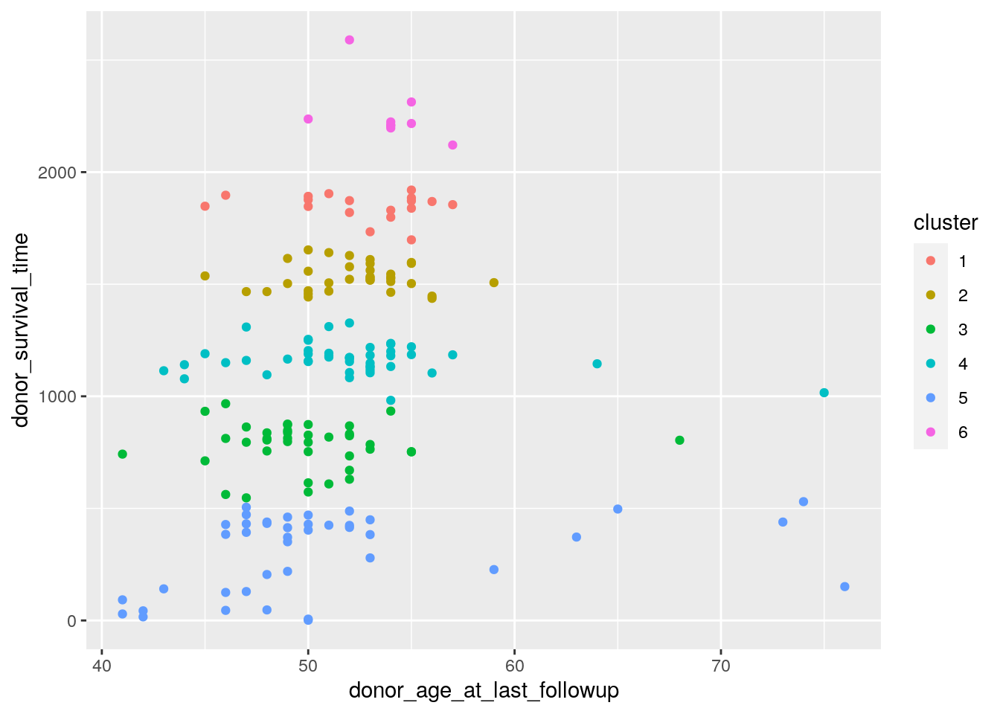
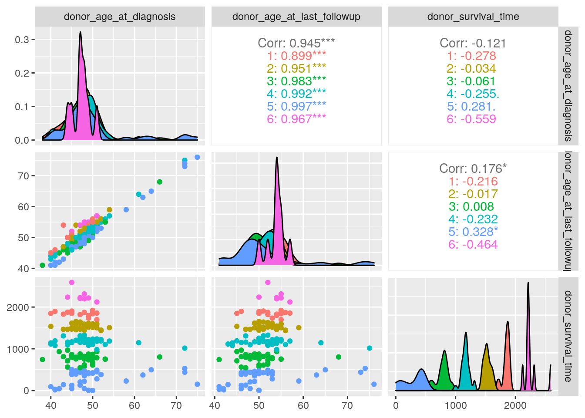

YEN BAO HUYNH ybh83 ##HERE IS MY PROJECT ## R Markdown ##the datasets here in this project are obtained from the International Cancer Genome Consortium Data Portal (ICGC Data Portal). Datasets here are current data as od Nov 26th, 2019. They are about the early onset of prostate cancers (EOPC) in Germany (DE). The “donors” mentioned throughout this project are the donors of prostate cancer specimen (tumour, solid tissue) for analyses.
library(tidyverse)## ── Attaching packages ─────────────────────────────────────── tidyverse 1.3.0 ──## ✓ ggplot2 3.3.3 ✓ purrr 0.3.4
## ✓ tibble 3.0.4 ✓ dplyr 1.0.2
## ✓ tidyr 1.1.2 ✓ stringr 1.4.0
## ✓ readr 1.4.0 ✓ forcats 0.5.0## ── Conflicts ────────────────────────────────────────── tidyverse_conflicts() ──
## x dplyr::filter() masks stats::filter()
## x dplyr::lag() masks stats::lag()donor_EOPC <-read_csv("donor_EOPC.csv")##
## ── Column specification ────────────────────────────────────────────────────────
## cols(
## .default = col_character(),
## donor_relapse_type = col_logical(),
## donor_age_at_diagnosis = col_double(),
## donor_age_at_enrollment = col_double(),
## donor_age_at_last_followup = col_double(),
## donor_relapse_interval = col_double(),
## donor_tumour_stage_at_diagnosis_supplemental = col_logical(),
## donor_survival_time = col_double(),
## donor_interval_of_last_followup = col_double(),
## cancer_type_prior_malignancy = col_logical()
## )
## ℹ Use `spec()` for the full column specifications.glimpse(donor_EOPC)## Rows: 211
## Columns: 21
## $ icgc_donor_id <chr> "DO228049", "DO228042", …
## $ project_code <chr> "EOPC-DE", "EOPC-DE", "E…
## $ study_donor_involved_in <chr> NA, NA, NA, NA, NA, NA, …
## $ submitted_donor_id <chr> "EOPC-113", "EOPC-104", …
## $ donor_sex <chr> "male", "male", "male", …
## $ donor_vital_status <chr> "alive", "alive", "alive…
## $ disease_status_last_followup <chr> "progression", "stable",…
## $ donor_relapse_type <lgl> NA, NA, NA, NA, NA, NA, …
## $ donor_age_at_diagnosis <dbl> 48, 44, 49, 50, 47, 48, …
## $ donor_age_at_enrollment <dbl> 49, 44, 49, 51, 48, 48, …
## $ donor_age_at_last_followup <dbl> 52, 47, 53, 53, 51, 52, …
## $ donor_relapse_interval <dbl> 42, NA, NA, NA, NA, NA, …
## $ donor_diagnosis_icd10 <chr> "C61", "C61", "C61", "C6…
## $ donor_tumour_staging_system_at_diagnosis <chr> "DRE and ultrasound", "D…
## $ donor_tumour_stage_at_diagnosis <chr> "T1c", "T1c", "T1c", "T1…
## $ donor_tumour_stage_at_diagnosis_supplemental <lgl> NA, NA, NA, NA, NA, NA, …
## $ donor_survival_time <dbl> 1155, 1160, 1533, 1105, …
## $ donor_interval_of_last_followup <dbl> 1155, 1160, 1533, 1105, …
## $ prior_malignancy <chr> "no", "no", "no", "no", …
## $ cancer_type_prior_malignancy <lgl> NA, NA, NA, NA, NA, NA, …
## $ cancer_history_first_degree_relative <chr> NA, NA, NA, NA, "no", "n…donor_exposure <-read_csv("donor_exposure.csv")##
## ── Column specification ────────────────────────────────────────────────────────
## cols(
## icgc_donor_id = col_character(),
## project_code = col_character(),
## submitted_donor_id = col_character(),
## exposure_type = col_logical(),
## exposure_intensity = col_logical(),
## tobacco_smoking_history_indicator = col_character(),
## tobacco_smoking_intensity = col_logical(),
## alcohol_history = col_character(),
## alcohol_history_intensity = col_character()
## )glimpse(donor_exposure)## Rows: 210
## Columns: 9
## $ icgc_donor_id <chr> "DO228049", "DO228042", "DO228041",…
## $ project_code <chr> "EOPC-DE", "EOPC-DE", "EOPC-DE", "E…
## $ submitted_donor_id <chr> "EOPC-113", "EOPC-104", "EOPC-103",…
## $ exposure_type <lgl> NA, NA, NA, NA, NA, NA, NA, NA, NA,…
## $ exposure_intensity <lgl> NA, NA, NA, NA, NA, NA, NA, NA, NA,…
## $ tobacco_smoking_history_indicator <chr> "Current reformed smoker for <= 15 …
## $ tobacco_smoking_intensity <lgl> NA, NA, NA, NA, NA, NA, NA, NA, NA,…
## $ alcohol_history <chr> "yes", "Don't know/Not sure", "Don'…
## $ alcohol_history_intensity <chr> "Not Documented", "Not Documented",…specimen <-read_csv("specimen.csv")##
## ── Column specification ────────────────────────────────────────────────────────
## cols(
## icgc_donor_id = col_character(),
## specimen_type = col_character(),
## specimen_type_other = col_logical(),
## specimen_interval = col_double(),
## specimen_donor_treatment_type = col_character(),
## tumour_confirmed = col_character()
## )glimpse(specimen)## Rows: 448
## Columns: 6
## $ icgc_donor_id <chr> "DO228049", "DO228049", "DO228042", "DO…
## $ specimen_type <chr> "Normal - blood derived", "Primary tumo…
## $ specimen_type_other <lgl> NA, NA, NA, NA, NA, NA, NA, NA, NA, NA,…
## $ specimen_interval <dbl> 28, 28, 45, 45, 41, 41, 139, 139, 73, 7…
## $ specimen_donor_treatment_type <chr> "no treatment", "no treatment", "no tre…
## $ tumour_confirmed <chr> "no", "yes", "no", "yes", "yes", "no", …##The EOPC and exposure datasets look tidy to me #Make specimen dataset tidy
specimen<-specimen%>%select(-specimen_type_other)specimen_no_duplicate<-distinct(specimen)tidyspecimen<-specimen_no_duplicate%>%pivot_wider(-2,names_from = "specimen_type",values_from="tumour_confirmed")#Joining
#I made a right join of two datasets, then made a full join of the previously created dataset with the third dataset. I just thought it would be clearer and simpler to me if I do it this way.
joined_dataset<-right_join(donor_EOPC,donor_exposure,by="icgc_donor_id")EOPC_exposure_specimen<-full_join(joined_dataset,tidyspecimen,by="icgc_donor_id")setdiff(donor_EOPC$icgc_donor_id,EOPC_exposure_specimen$icgc_donor_id)## character(0)##Create summary statistics #select
#Drop all the columns that contain NA only
EOPC_exposure_specimen1<-EOPC_exposure_specimen%>%select(-study_donor_involved_in,-donor_relapse_type,-donor_tumour_stage_at_diagnosis_supplemental,-cancer_type_prior_malignancy,-exposure_type,-exposure_intensity,-tobacco_smoking_intensity,-project_code.y,-submitted_donor_id.y,-donor_relapse_interval,-cancer_history_first_degree_relative)
finaldataset<-na.omit(EOPC_exposure_specimen1)#I want to see the time gap between the patients' smoking history and the time they were diagnosed with prostate cancer.
finaldataset%>%select(icgc_donor_id,tobacco_smoking_history_indicator,donor_age_at_diagnosis)%>%glimpse()## Rows: 186
## Columns: 3
## $ icgc_donor_id <chr> "DO228049", "DO228042", "DO228041",…
## $ tobacco_smoking_history_indicator <chr> "Current reformed smoker for <= 15 …
## $ donor_age_at_diagnosis <dbl> 48, 44, 49, 50, 47, 48, 47, 43, 45,…#filter. I want to see if alcohol history will have any influence on the mortality of prostate cancer patients. There are too many “don’t know/not sure” on alcohol history in this case so we can’t really tell the impact.
finaldataset%>%filter(donor_vital_status=="alive",alcohol_history=="yes")## # A tibble: 35 x 22
## icgc_donor_id project_code.x submitted_donor… donor_sex donor_vital_sta…
## <chr> <chr> <chr> <chr> <chr>
## 1 DO228049 EOPC-DE EOPC-113 male alive
## 2 DO228043 EOPC-DE EOPC-107 male alive
## 3 DO228047 EOPC-DE EOPC-111 male alive
## 4 DO228050 EOPC-DE EOPC-114 male alive
## 5 DO228053 EOPC-DE EOPC-117 male alive
## 6 DO228054 EOPC-DE EOPC-118 male alive
## 7 DO228063 EOPC-DE EOPC-132 male alive
## 8 DO228082 EOPC-DE EOPC-159 male alive
## 9 DO228084 EOPC-DE EOPC-161 male alive
## 10 DO228085 EOPC-DE EOPC-162 male alive
## # … with 25 more rows, and 17 more variables:
## # disease_status_last_followup <chr>, donor_age_at_diagnosis <dbl>,
## # donor_age_at_enrollment <dbl>, donor_age_at_last_followup <dbl>,
## # donor_diagnosis_icd10 <chr>,
## # donor_tumour_staging_system_at_diagnosis <chr>,
## # donor_tumour_stage_at_diagnosis <chr>, donor_survival_time <dbl>,
## # donor_interval_of_last_followup <dbl>, prior_malignancy <chr>,
## # tobacco_smoking_history_indicator <chr>, alcohol_history <chr>,
## # alcohol_history_intensity <chr>, specimen_interval <dbl>,
## # specimen_donor_treatment_type <chr>, `Normal - blood derived` <chr>,
## # `Primary tumour - solid tissue` <chr>finaldataset%>%filter(donor_vital_status=="alive",alcohol_history=="Don't know/Not sure")## # A tibble: 135 x 22
## icgc_donor_id project_code.x submitted_donor… donor_sex donor_vital_sta…
## <chr> <chr> <chr> <chr> <chr>
## 1 DO228042 EOPC-DE EOPC-104 male alive
## 2 DO228041 EOPC-DE EOPC-103 male alive
## 3 DO228044 EOPC-DE EOPC-108 male alive
## 4 DO228046 EOPC-DE EOPC-110 male alive
## 5 DO228048 EOPC-DE EOPC-112 male alive
## 6 DO228057 EOPC-DE EOPC-124 male alive
## 7 DO228056 EOPC-DE EOPC-123 male alive
## 8 DO228059 EOPC-DE EOPC-126 male alive
## 9 DO228058 EOPC-DE EOPC-125 male alive
## 10 DO228060 EOPC-DE EOPC-127 male alive
## # … with 125 more rows, and 17 more variables:
## # disease_status_last_followup <chr>, donor_age_at_diagnosis <dbl>,
## # donor_age_at_enrollment <dbl>, donor_age_at_last_followup <dbl>,
## # donor_diagnosis_icd10 <chr>,
## # donor_tumour_staging_system_at_diagnosis <chr>,
## # donor_tumour_stage_at_diagnosis <chr>, donor_survival_time <dbl>,
## # donor_interval_of_last_followup <dbl>, prior_malignancy <chr>,
## # tobacco_smoking_history_indicator <chr>, alcohol_history <chr>,
## # alcohol_history_intensity <chr>, specimen_interval <dbl>,
## # specimen_donor_treatment_type <chr>, `Normal - blood derived` <chr>,
## # `Primary tumour - solid tissue` <chr>finaldataset%>%filter(donor_vital_status=="alive",alcohol_history=="no")## # A tibble: 11 x 22
## icgc_donor_id project_code.x submitted_donor… donor_sex donor_vital_sta…
## <chr> <chr> <chr> <chr> <chr>
## 1 DO228055 EOPC-DE EOPC-122 male alive
## 2 DO228093 EOPC-DE EOPC-170 male alive
## 3 DO228106 EOPC-DE EOPC-183 male alive
## 4 DO228130 EOPC-DE LOPC-032 male alive
## 5 DO228133 EOPC-DE LOPC-041 male alive
## 6 DO228286 EOPC-DE EOPC-044 male alive
## 7 DO228709 EOPC-DE EOPC-078 male alive
## 8 DO228728 EOPC-DE EOPC-081 male alive
## 9 DO227411 EOPC-DE EOPC-080 male alive
## 10 DO227448 EOPC-DE EOPC-128 male alive
## 11 DO227454 EOPC-DE EOPC-156 male alive
## # … with 17 more variables: disease_status_last_followup <chr>,
## # donor_age_at_diagnosis <dbl>, donor_age_at_enrollment <dbl>,
## # donor_age_at_last_followup <dbl>, donor_diagnosis_icd10 <chr>,
## # donor_tumour_staging_system_at_diagnosis <chr>,
## # donor_tumour_stage_at_diagnosis <chr>, donor_survival_time <dbl>,
## # donor_interval_of_last_followup <dbl>, prior_malignancy <chr>,
## # tobacco_smoking_history_indicator <chr>, alcohol_history <chr>,
## # alcohol_history_intensity <chr>, specimen_interval <dbl>,
## # specimen_donor_treatment_type <chr>, `Normal - blood derived` <chr>,
## # `Primary tumour - solid tissue` <chr>finaldataset%>%filter(donor_vital_status=="deceased",alcohol_history=="yes")## # A tibble: 2 x 22
## icgc_donor_id project_code.x submitted_donor… donor_sex donor_vital_sta…
## <chr> <chr> <chr> <chr> <chr>
## 1 DO228122 EOPC-DE LOPC-002 male deceased
## 2 DO52516 EOPC-DE EOPC-041 male deceased
## # … with 17 more variables: disease_status_last_followup <chr>,
## # donor_age_at_diagnosis <dbl>, donor_age_at_enrollment <dbl>,
## # donor_age_at_last_followup <dbl>, donor_diagnosis_icd10 <chr>,
## # donor_tumour_staging_system_at_diagnosis <chr>,
## # donor_tumour_stage_at_diagnosis <chr>, donor_survival_time <dbl>,
## # donor_interval_of_last_followup <dbl>, prior_malignancy <chr>,
## # tobacco_smoking_history_indicator <chr>, alcohol_history <chr>,
## # alcohol_history_intensity <chr>, specimen_interval <dbl>,
## # specimen_donor_treatment_type <chr>, `Normal - blood derived` <chr>,
## # `Primary tumour - solid tissue` <chr>finaldataset%>%filter(donor_vital_status=="deceased",alcohol_history=="Don't know/Not sure")## # A tibble: 2 x 22
## icgc_donor_id project_code.x submitted_donor… donor_sex donor_vital_sta…
## <chr> <chr> <chr> <chr> <chr>
## 1 DO228114 EOPC-DE EOPC-192 male deceased
## 2 DO228751 EOPC-DE EOPC-084 male deceased
## # … with 17 more variables: disease_status_last_followup <chr>,
## # donor_age_at_diagnosis <dbl>, donor_age_at_enrollment <dbl>,
## # donor_age_at_last_followup <dbl>, donor_diagnosis_icd10 <chr>,
## # donor_tumour_staging_system_at_diagnosis <chr>,
## # donor_tumour_stage_at_diagnosis <chr>, donor_survival_time <dbl>,
## # donor_interval_of_last_followup <dbl>, prior_malignancy <chr>,
## # tobacco_smoking_history_indicator <chr>, alcohol_history <chr>,
## # alcohol_history_intensity <chr>, specimen_interval <dbl>,
## # specimen_donor_treatment_type <chr>, `Normal - blood derived` <chr>,
## # `Primary tumour - solid tissue` <chr>finaldataset%>%filter(donor_vital_status=="deceased",alcohol_history=="no")## # A tibble: 1 x 22
## icgc_donor_id project_code.x submitted_donor… donor_sex donor_vital_sta…
## <chr> <chr> <chr> <chr> <chr>
## 1 DO228069 EOPC-DE EOPC-142 male deceased
## # … with 17 more variables: disease_status_last_followup <chr>,
## # donor_age_at_diagnosis <dbl>, donor_age_at_enrollment <dbl>,
## # donor_age_at_last_followup <dbl>, donor_diagnosis_icd10 <chr>,
## # donor_tumour_staging_system_at_diagnosis <chr>,
## # donor_tumour_stage_at_diagnosis <chr>, donor_survival_time <dbl>,
## # donor_interval_of_last_followup <dbl>, prior_malignancy <chr>,
## # tobacco_smoking_history_indicator <chr>, alcohol_history <chr>,
## # alcohol_history_intensity <chr>, specimen_interval <dbl>,
## # specimen_donor_treatment_type <chr>, `Normal - blood derived` <chr>,
## # `Primary tumour - solid tissue` <chr>#arrange. The highest age of diagnosis and enrollment in the survey is 75, the youngest is 38 years old. Prostate cancer typically affects men over 50, so the guy at 38 with cancer is a rare case. This result is based on the dataset with na.omit. I did run this code with the original dataset, and the youngest age is 32, while the oldest age stays the same, 75.
finaldataset%>%select(icgc_donor_id,donor_age_at_diagnosis,donor_age_at_enrollment)%>%arrange(desc(donor_age_at_diagnosis),desc(donor_age_at_enrollment))%>%head()## # A tibble: 6 x 3
## icgc_donor_id donor_age_at_diagnosis donor_age_at_enrollment
## <chr> <dbl> <dbl>
## 1 DO228125 75 75
## 2 DO228128 72 72
## 3 DO228122 72 72
## 4 DO228133 72 72
## 5 DO228126 66 66
## 6 DO228075 64 64finaldataset%>%select(icgc_donor_id,donor_age_at_diagnosis,donor_age_at_enrollment)%>%arrange(desc(donor_age_at_diagnosis),desc(donor_age_at_enrollment))%>%tail()## # A tibble: 6 x 3
## icgc_donor_id donor_age_at_diagnosis donor_age_at_enrollment
## <chr> <dbl> <dbl>
## 1 DO228076 40 40
## 2 DO227414 40 40
## 3 DO227410 40 40
## 4 DO52524 40 40
## 5 DO52503 40 40
## 6 DO10815 38 38#group_by: it is hard to tell when the survival time are depicted in days, so I change it to year
finaldataset%>%group_by(donor_age_at_diagnosis)%>%summarise()## `summarise()` ungrouping output (override with `.groups` argument)## # A tibble: 23 x 1
## donor_age_at_diagnosis
## <dbl>
## 1 38
## 2 40
## 3 41
## 4 42
## 5 43
## 6 44
## 7 45
## 8 46
## 9 47
## 10 48
## # … with 13 more rows#summarize
#relationship between being alive, at what stage of cancer, and how many cases for each different combinations
finaldataset%>%group_by(donor_vital_status,disease_status_last_followup)%>%summarize(count=n())## `summarise()` regrouping output by 'donor_vital_status' (override with `.groups` argument)## # A tibble: 5 x 3
## # Groups: donor_vital_status [2]
## donor_vital_status disease_status_last_followup count
## <chr> <chr> <int>
## 1 alive progression 8
## 2 alive relapse 25
## 3 alive stable 148
## 4 deceased progression 4
## 5 deceased stable 1#see distinct
finaldataset%>%summarize_all(n_distinct)## # A tibble: 1 x 22
## icgc_donor_id project_code.x submitted_donor… donor_sex donor_vital_sta…
## <int> <int> <int> <int> <int>
## 1 186 1 186 1 2
## # … with 17 more variables: disease_status_last_followup <int>,
## # donor_age_at_diagnosis <int>, donor_age_at_enrollment <int>,
## # donor_age_at_last_followup <int>, donor_diagnosis_icd10 <int>,
## # donor_tumour_staging_system_at_diagnosis <int>,
## # donor_tumour_stage_at_diagnosis <int>, donor_survival_time <int>,
## # donor_interval_of_last_followup <int>, prior_malignancy <int>,
## # tobacco_smoking_history_indicator <int>, alcohol_history <int>,
## # alcohol_history_intensity <int>, specimen_interval <int>,
## # specimen_donor_treatment_type <int>, `Normal - blood derived` <int>,
## # `Primary tumour - solid tissue` <int>#Let's see if the survival time differs largely among people with different alcohol history
finaldataset %>%group_by(alcohol_history) %>%summarize(mean_survival_time=mean(donor_survival_time))## `summarise()` ungrouping output (override with `.groups` argument)## # A tibble: 3 x 2
## alcohol_history mean_survival_time
## <chr> <dbl>
## 1 Don't know/Not sure 1171.
## 2 no 975.
## 3 yes 783.#Let's see the median age by disease status at last follow up
finaldataset %>%group_by(disease_status_last_followup) %>%summarize(median_age=median(donor_age_at_last_followup))## `summarise()` ungrouping output (override with `.groups` argument)## # A tibble: 3 x 2
## disease_status_last_followup median_age
## <chr> <dbl>
## 1 progression 54
## 2 relapse 52
## 3 stable 51#Let's see the age range by vital status
finaldataset %>%group_by(donor_vital_status) %>%summarize(min_age_by_vital_status=min(donor_age_at_last_followup),max_age_by_vital_status=max(donor_age_at_last_followup))## `summarise()` ungrouping output (override with `.groups` argument)## # A tibble: 2 x 3
## donor_vital_status min_age_by_vital_status max_age_by_vital_status
## <chr> <dbl> <dbl>
## 1 alive 41 76
## 2 deceased 48 74#mutate: Just a clarification on stage of tumour at diagnosis. What do those T1c, T1a, etc mean?
finaldataset_mutate<-finaldataset%>% mutate(tumor_stage_at_diagnosis=recode(donor_tumour_stage_at_diagnosis, T1c="stage1-just found", T2a="stage2-half of one prostate's side",T2b="stage2-more than one half of one side",T3a="stage3-tumour grown outside the prostate",T2c="stage2-both sides of prostate"))
glimpse(finaldataset_mutate)## Rows: 186
## Columns: 23
## $ icgc_donor_id <chr> "DO228049", "DO228042", "DO2…
## $ project_code.x <chr> "EOPC-DE", "EOPC-DE", "EOPC-…
## $ submitted_donor_id.x <chr> "EOPC-113", "EOPC-104", "EOP…
## $ donor_sex <chr> "male", "male", "male", "mal…
## $ donor_vital_status <chr> "alive", "alive", "alive", "…
## $ disease_status_last_followup <chr> "progression", "stable", "st…
## $ donor_age_at_diagnosis <dbl> 48, 44, 49, 50, 47, 48, 47, …
## $ donor_age_at_enrollment <dbl> 49, 44, 49, 51, 48, 48, 47, …
## $ donor_age_at_last_followup <dbl> 52, 47, 53, 53, 51, 52, 51, …
## $ donor_diagnosis_icd10 <chr> "C61", "C61", "C61", "C61", …
## $ donor_tumour_staging_system_at_diagnosis <chr> "DRE and ultrasound", "DRE a…
## $ donor_tumour_stage_at_diagnosis <chr> "T1c", "T1c", "T1c", "T1c", …
## $ donor_survival_time <dbl> 1155, 1160, 1533, 1105, 1311…
## $ donor_interval_of_last_followup <dbl> 1155, 1160, 1533, 1105, 1311…
## $ prior_malignancy <chr> "no", "no", "no", "no", "no"…
## $ tobacco_smoking_history_indicator <chr> "Current reformed smoker for…
## $ alcohol_history <chr> "yes", "Don't know/Not sure"…
## $ alcohol_history_intensity <chr> "Not Documented", "Not Docum…
## $ specimen_interval <dbl> 28, 45, 41, 139, 73, 85, 63,…
## $ specimen_donor_treatment_type <chr> "no treatment", "no treatmen…
## $ `Normal - blood derived` <chr> "no", "no", "no", "no", "no"…
## $ `Primary tumour - solid tissue` <chr> "yes", "yes", "yes", "yes", …
## $ tumor_stage_at_diagnosis <chr> "stage1-just found", "stage1…#Visualizing #Correlation heat map. Apparently there’s a high correlation between the three age types, age at diagnosis, age at last follow up and age at enrollment. These kinds of patterns are also visible in the clustering result underneath.
finaldataset%>% select_if(is.numeric) %>% cor %>% as.data.frame %>%
rownames_to_column %>% pivot_longer(-1) %>%
ggplot(aes(rowname,name,fill=value))+geom_tile()+
geom_text(aes(label=round(value,2)))+
xlab("")+ylab("")+coord_fixed()+
scale_fill_gradient2(low="red",mid="white",high="blue") + theme(axis.text.x=element_text(angle=45,hjust=1))
#plots
#not choosing geom_point because there are donors that have the same age. The points on the plot won't tell how many donors are there or the proportion/frequency of people of the same age
#ggplot(finaldataset, aes(x=donor_tumour_stage_at_diagnosis,y=donor_age_at_diagnosis,color="red", fill=donor_age_at_diagnosis)) +geom_point()ggplot(finaldataset, aes(x=donor_age_at_diagnosis, fill=donor_tumour_stage_at_diagnosis)) +geom_histogram(binwidth = 2,colour="black")+scale_x_continuous(breaks = seq(30,75,5))+scale_y_continuous(breaks = seq(0,60,5))+ggtitle("Histogram of diagnosis age and tumour stage")+xlab("Age at diagnosis")+ylab("Count")
#COMMENT: I tried boxplot, geom_point, geom_density and the histogram to see which one fits best. Histogram looks like the most informaive graph I can make for what I want: what age range is the most popular for prostate cancer diagnosis; and when the donors got diagnosed, what tumour stage were they in? Results are interesting. Most of the prostate cancer donors here got diagnosed at around 40 - 50 years old, and most of them were in the first stage of cancer. Rare cases where the donors were as old as 75, being at stage 2 happened as well. ggplot(finaldataset, aes(x = alcohol_history, y = donor_survival_time, fill= alcohol_history))+ geom_bar(stat="summary",fun=mean)+ geom_errorbar(stat="summary", fun.data=mean_se)+ggtitle("Survival time vs Alcohol history")+xlab("Alcohol history")+ylab("Donors' survival time")
#COMMENT: I wanted to see alcohol history vs survival time relationship. The don'tknow/not sure column won't be telling us much due to the fact that donors could not give a concrete answer to their alcolhol history. But a yes to alcolhol history shows a shorter average survival time, around 750 days, which is approximately 2 years. Patients with no alcohol history might be able to live longer, around 3 years##k-means
library(tidyverse)
library(cluster)#There are 6 numeric variables in the finaldataset. However, here I only pick 3. This is because some of the numeric variabels in my dataset are basically similar in meaning, such as donor_survival_time and donor_interval_of_last_followup. Another numeric variable that I didn’t include in clustering is the specimen interval. Since I’m mainly dealing with age, specimen interval won’t be meaningful in clustering in my opinion.
clust_dat<-finaldataset%>%dplyr::select(donor_age_at_diagnosis,donor_age_at_last_followup,donor_survival_time)#Let’s find the right number for k. k=6 seems like the best for the number of clusters based on my dataset. I also try k=7,8,9. They also give higher total variance in the data set that is explained by the clustering. However, I just feel like 9 clusters are just a little bit too many. k=6 gives the total variance at 96.9%, which I feel enough to deal with.
library(cluster)
sil_width<-vector() #empty vector to hold mean sil width
for(i in 2:10){
kms <- kmeans(clust_dat,centers=i) #compute k-means solution
sil <- silhouette(kms$cluster,dist(clust_dat)) #get sil widths
sil_width[i]<-mean(sil[,3]) #take averages (higher is better)
}
ggplot()+geom_line(aes(x=1:10,y=sil_width))+scale_x_continuous(name="k",breaks=1:10)## Warning: Removed 1 row(s) containing missing values (geom_path).
#Specify k=6
kmeans1 <- clust_dat%>%kmeans(6)
kmeans1## K-means clustering with 6 clusters of sizes 18, 34, 39, 45, 41, 9
##
## Cluster means:
## donor_age_at_diagnosis donor_age_at_last_followup donor_survival_time
## 1 47.11111 52.50000 1847.7222
## 2 47.82353 52.17647 1530.5882
## 3 47.71795 49.94872 779.4872
## 4 48.62222 51.95556 1167.0222
## 5 49.87805 51.00000 306.3659
## 6 47.33333 53.88889 2257.4444
##
## Clustering vector:
## [1] 4 4 2 4 4 2 2 4 3 4 3 4 3 5 3 3 3 2 4 6 5 2 5 2 2 3 5 1 1 5 5 2 4 2 2 3 5
## [38] 6 3 3 4 3 3 5 3 2 3 4 4 2 1 4 2 3 3 3 3 2 4 3 4 4 3 5 2 5 5 2 3 1 4 4 5 2
## [75] 4 2 2 2 3 3 5 2 3 4 2 3 1 4 3 4 6 5 5 5 4 2 5 4 4 4 5 3 1 5 5 5 4 5 3 5 6
## [112] 1 4 4 4 5 3 4 5 3 2 5 5 6 3 2 3 5 5 5 5 4 5 5 2 4 5 3 4 4 3 2 3 3 4 6 3 5
## [149] 5 5 1 6 1 2 3 1 2 6 4 1 6 3 4 4 1 4 1 5 1 4 2 4 2 1 2 5 5 1 1 2 1 5 4 4 2
## [186] 4
##
## Within cluster sum of squares by cluster:
## [1] 56039.89 119050.12 396551.54 203295.47 1186133.90 143883.11
## (between_SS / total_SS = 96.5 %)
##
## Available components:
##
## [1] "cluster" "centers" "totss" "withinss" "tot.withinss"
## [6] "betweenss" "size" "iter" "ifault"kmeansclust<-clust_dat%>%mutate(cluster=as.factor(kmeans1$cluster)) #save the cluster solution in your dataset
kmeansclust%>%ggplot(aes(donor_age_at_diagnosis,donor_age_at_last_followup,color=cluster))+geom_point()
kmeansclust%>%ggplot(aes(donor_survival_time,donor_age_at_diagnosis,color=cluster))+geom_point()
kmeansclust%>%ggplot(aes(donor_age_at_last_followup,donor_survival_time,color=cluster))+geom_point()
library(GGally)## Registered S3 method overwritten by 'GGally':
## method from
## +.gg ggplot2ggpairs(kmeansclust,columns =1:3, aes(color=cluster))
#So I run both ggplot and ggpairs. I will explain my results from ggpairs because it gives a more holistic overview of the clustering result. The density plots along the diagonal shows that the age at diagnosis and age at last followup are mostly around people with 40-50 years of age. Donor survival time, however, scatters from very short to very long. The clusters showed as the scatter plots are interesting. The clusters show that I can group people mostly based on their survival time, since age at diagnosis and age at last followup are not too distinctly different (only a few years!). Based on the Pearson’s Correlation Coefficient, age at last follow up and age at diagnosis are highly correlated. However, survival time is not really in high correlation with the other two variables. I’m not sure but I guess this is because the survival time is counted in days, while the other two variables are counted in years? Anyhow, the clustering results still show understandable visualization on different groups of donors, based on their similarity in ages at diagnosis, at follow up, and survival time!